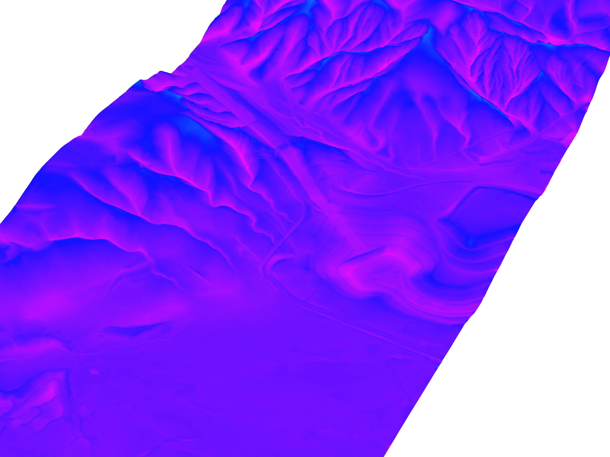

Bison
About: Bison is a landcape architecture plugin for Grasshopper + Rhino 6. It features tools for
terrain mesh creation, analysis, editing, and annotation.
It is currently in beta and available for academic and commercial use.
Contact: info@bison.la
Documentation: Component Reference
Examples
Download: Release v0.9 Expires 07/01/2018